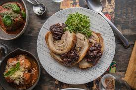

Popolo's Porchetta Romana Recipe

you can find more recipes here: all recipes
Description
a wonderful boneless pork roast wrapped in fat and skin and generously seasoned with garlic, sage, rosemary and other aromatic herbs and spices.
Ingredients
- 2.2kg piece free-range pork belly, scored in a 3cm cross-hatch pattern
100 ml extra-virgin olive oil
- 5-6 fresh bay leaves, finely chopped
- 3 teaspoons finely chopped rosemary
- 3 garlic cloves, finely chopped
- 100 ml dry white wine
- ½ tsp chilli flakes
Steps
- Place pork skin-side up on a work surface, drizzle with half the olive oil, scatter with 3 teaspoons of sea salt and massage in well.
- Refrigerate, uncovered, for salt to penetrate (2 hours).
- Preheat oven to 160°C. Place pork skin-side down on a work surface, scatter over herbs and garlic, season to taste, roll to form a cylinder, then tie at intervals with kitchen string.
- Place in a deep roasting pan, drizzle with remaining oil and roast until partly cooked (35-40 minutes), then increase temperature to 180°C and roast until skin begins to crisp (35-40 minutes).
- Add wine, increase temperature to 200°C and cook until skin is crisp (35-40 minutes).
- Set aside to rest (30 minutes).